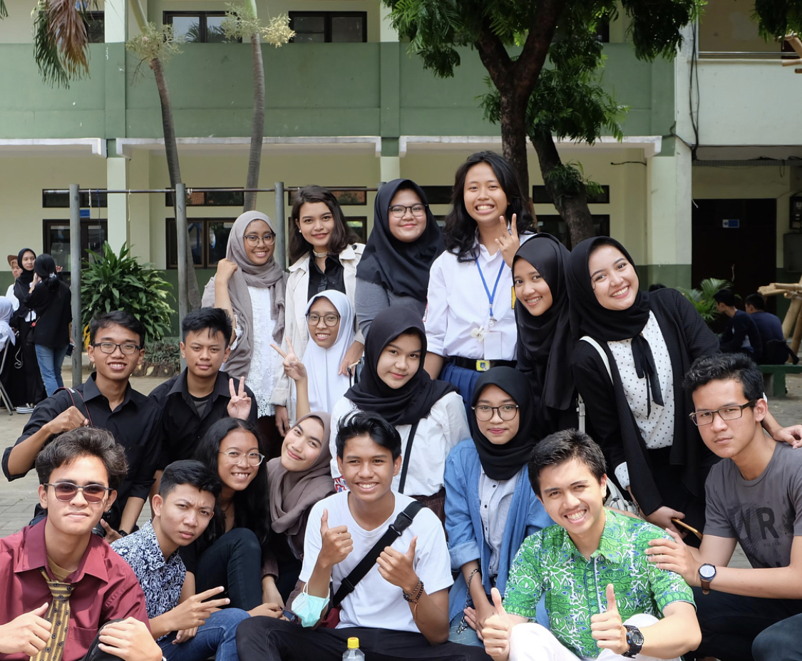

About Me
Photo of me:

Hello everyone ✨ my name is Cempaka Rahma Davi.I was born in Jakarta 10 December 2001. My family and my friend always call me ceces i dont know where the came from but you can call me anything that you want.Now, I study in Information System Department at Institut Teknologi Sepuluh Nopember [ITS] Surabaya.The dream i had when i was senior high school student was to be a doctor. But sometimes things dont go well like everthing we've planned 😔. Its oke i will responsible to the choice that i took. Thank You ❤
We have to connected🙈
First Short Trip to Malang
Nov 17, 2019

Hello guys, i want to tell story about my first short trip in surabaya with my friends 😆 When 17 November 2019 my department have an event called malam inagurasi.The event started from 5pm i guess untill 8 pm.After the event end,my friend and i initiate to go to malang to see the sunrise😻. Spontaneously, we invite another friends to join our short trip to malang. We didn't expect that many friends would join our trip. There are 20 people that join the join our trip😭🙏it is Pradnya Oji Kean Viko Belinda Hanip Agym Anug Fajrul Aqmal Ghina Acin Dalila Rekyan Adika Bariqi Rafli and also Devita.My destination was Bukit Paralayang in malang. Because the its a hill so the weather is so cold.Unfortunately,i dont bring my jacket but thanks god that my boyfriend borrow me his jacket.Its such a great memories for me because i never go on trip with my friend with that beautiful view.I hope we can do the another trip again 😣
HUT SMANSA
August 26,2018
So in this section,i want to tell you that i really miss my senior high school friends especiall when i was at 11 grade.This picture was very memorable because we celebrate our school birthday.That time was the last time we can celebrate the school birthday because when we are in 12 grade we only focussing on examination.When i was in 11 grade,i feel that i never have sad moment or we can say that i always happy :".We just having fun together because we are in second year of senior high school means that we already know all the facility and get more new friends but we dont have many schedule like thrid year of senior high school.I hope that this pandemic end as soon as posible so we can meet each other.Miss you guys XOXO